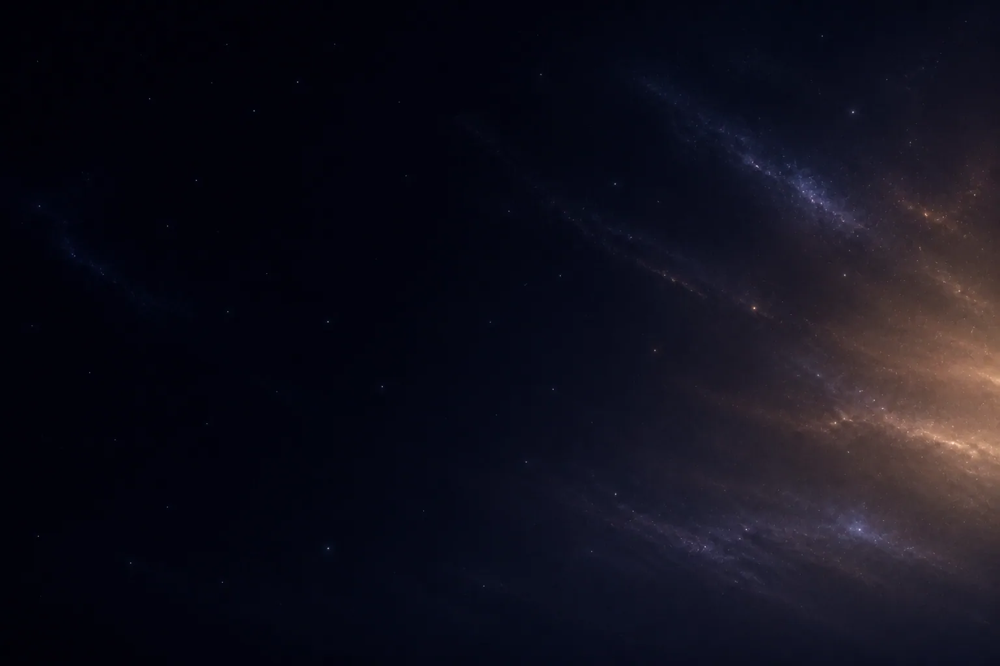
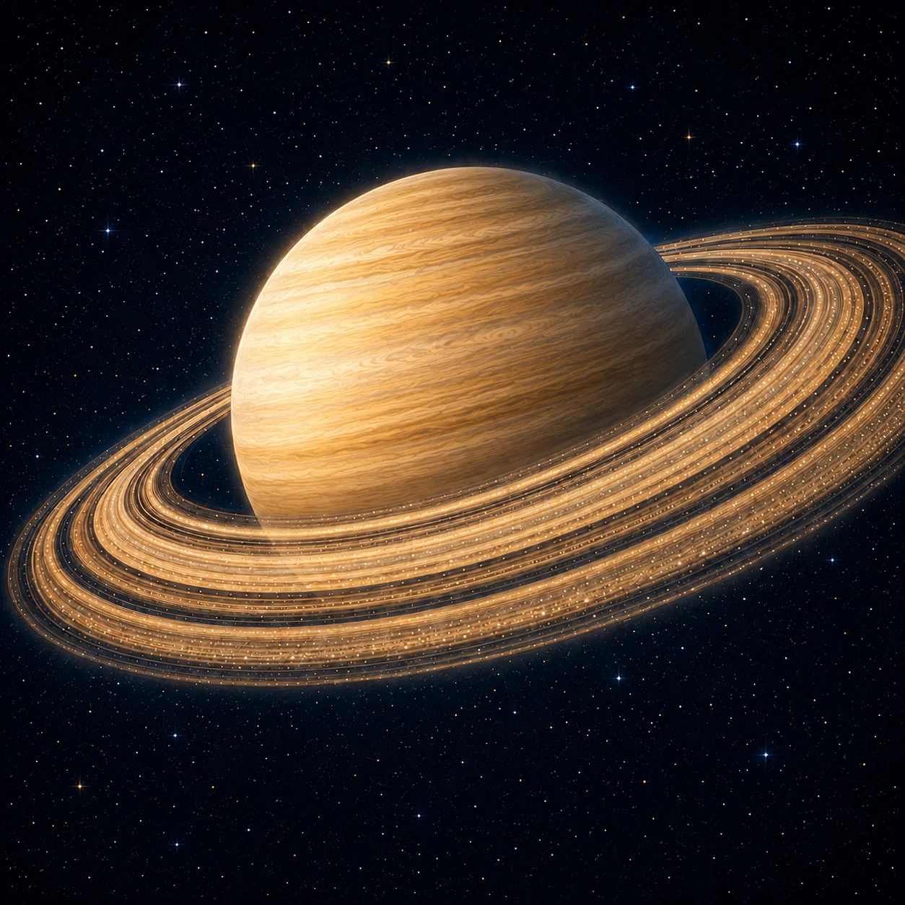
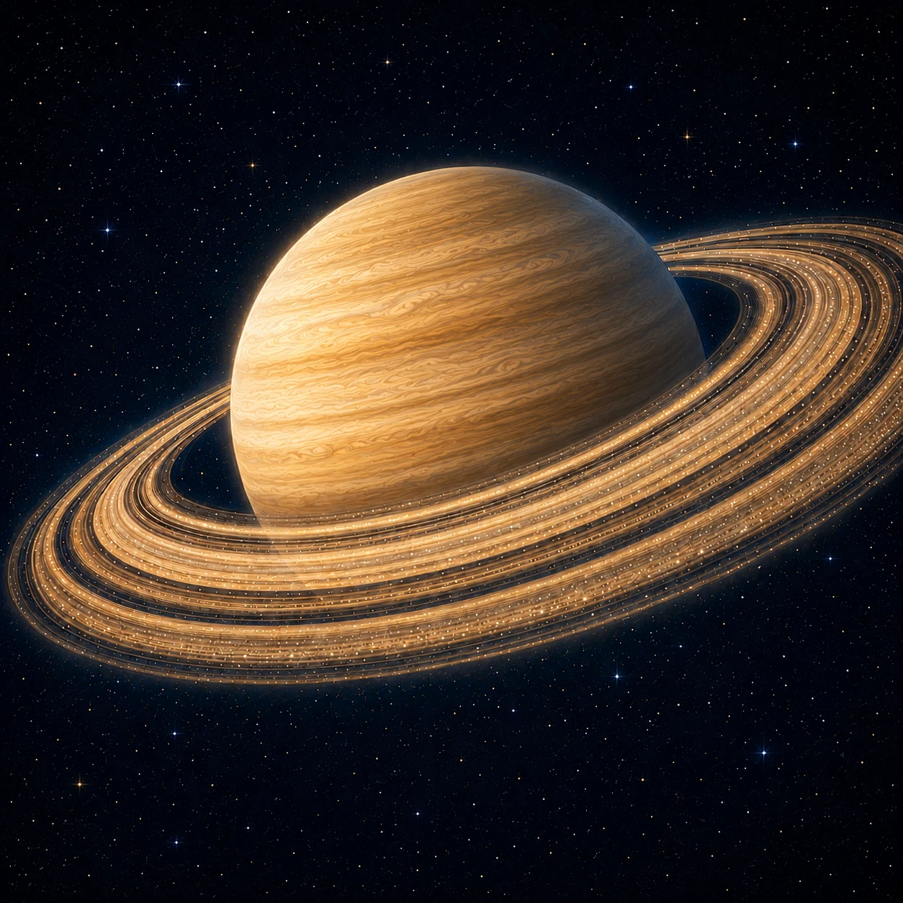
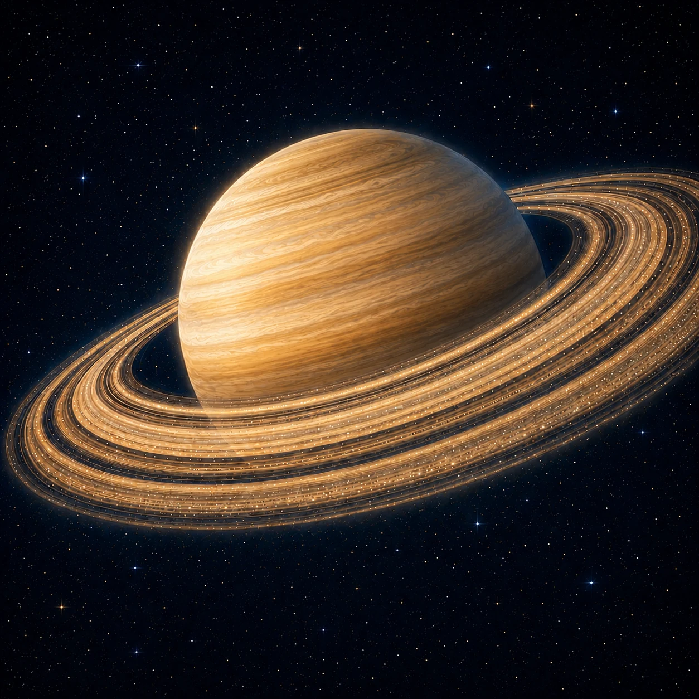
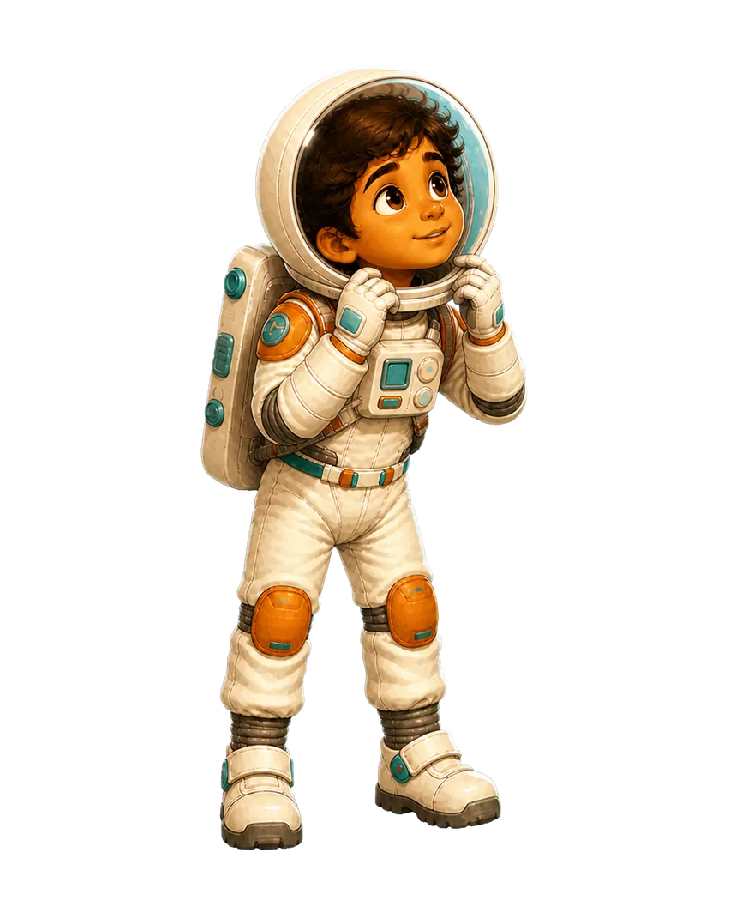
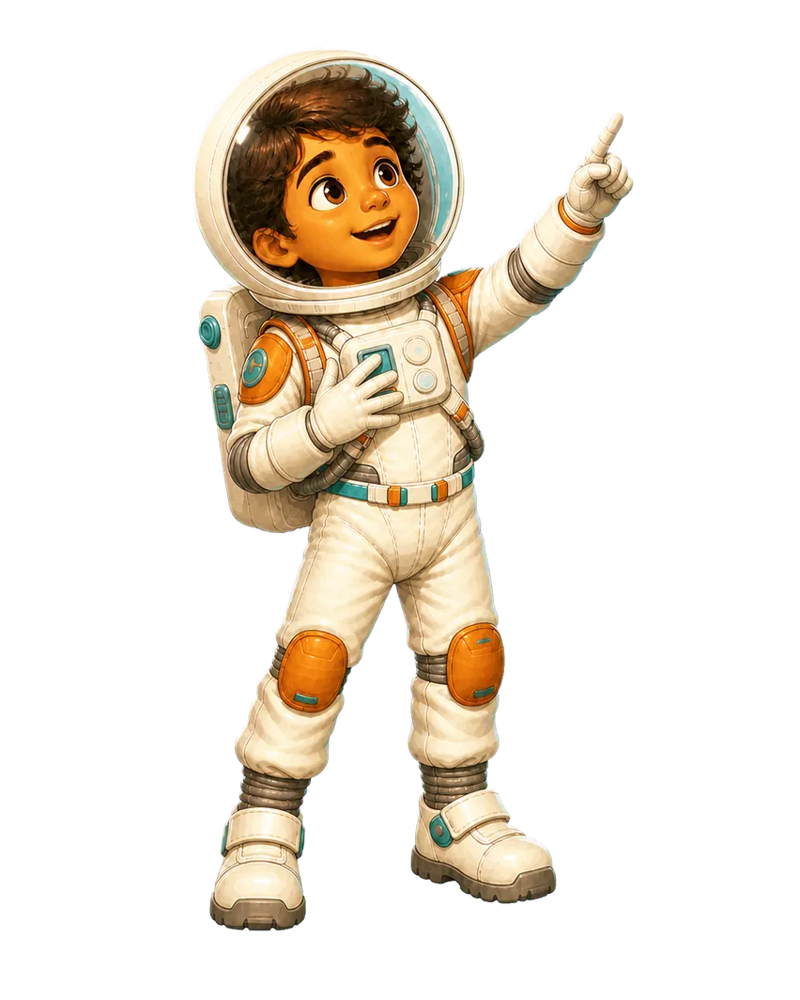

Page 13 · Ringed giant
Saturn
Saturn is a pale gas giant encircled by countless pieces of ice and rock. Its broad rings are astonishingly thin.

Saturn is a pale gas giant encircled by countless pieces of ice and rock. Its broad rings are astonishingly thin.





Tap the diagram to replay its motion. Illustrations are explanatory.